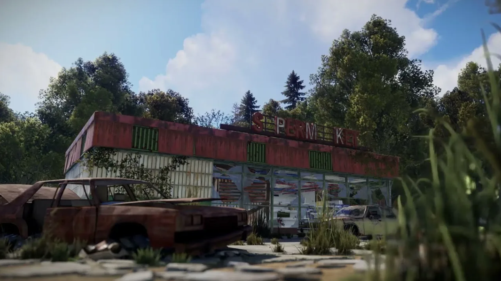
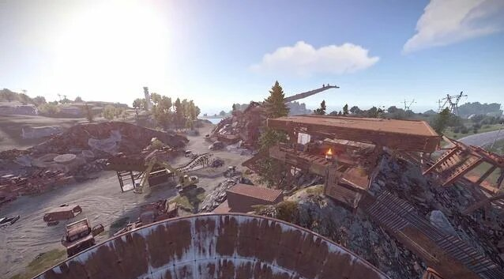
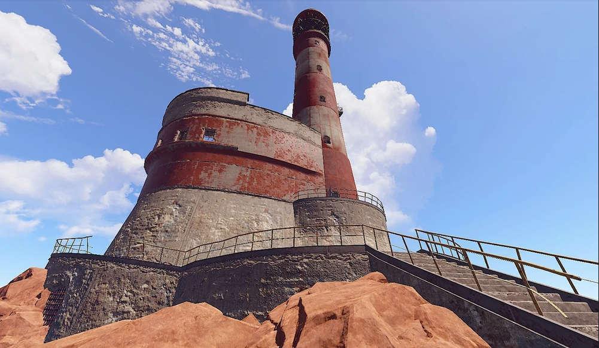
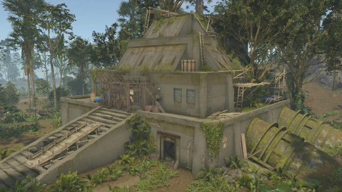

- Заправка - в среднем можно слутать около 150 скрапа

- Супермаркет - также как и заправка, тоже около 150 скрапа

- Свалка - есть пару дизелей, зеленая карта и выходит около 300 скрапа

- Маяк - самовый сейвовый переработчик, есть зеленая карта и выйдет около 100 скрапа

- Склад, Зиккурат - можно проходить мимо, выйдет около 100 скарпа
